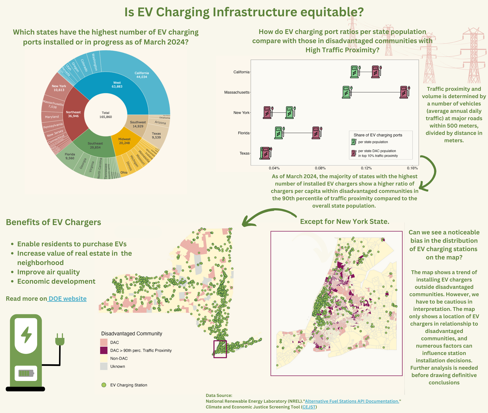
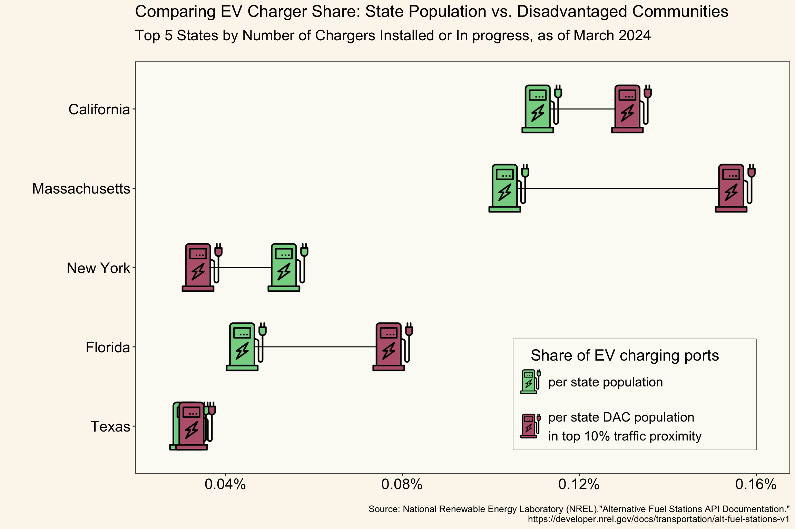

Background
In this blog post, we will create three charts to investigate the accessibility of charging infrastructure for disadvantaged communities. Before we proceed to the data and code, let’s consider what makes this this topic important.
With a rapid transition to “green economy” EV charging infrastructure has come into the spotlight. Initiatives like California’s adoption of “The Advanced Clean Cars II” in 2022 mandating all new vehicle sales in California be zero-emissions vehicles (ZEV) by 2035, further turned attention to the availability of charging infrastructure. As states like Rhode Island, Washington, Virginia, Vermont, Oregon, New York, and Massachusetts adopted similar mandates and Connecticut, Colorado, Delaware, Maryland, New Jersey, New Mexico, Minnesota, and Nevada are expected to follow suit, the question in inclusivity of this transition becomes ever important. Will disadvantaged communities have equitable access to the benefits of the green economy, or will they be left behind? While high EV prices and limited availability remain primary obstacles, the lack of accessible charging infrastructure poses a challenge of its own. Insufficient charging infrastructure charging in these communities can discourage the households from adopting EVs. Furthermore, charging infrastructure offers multiple benefits to the communities where they are implemented, such as improved air quality, increased business opportunities, and higher real estate values, and etc. (refer to DOE website. Disadvantaged communities, in particular, stand to gain from these improvements.
Final Infographic
Data And Design process
Data
I used the following data sets to address the question about equity within EV charging network distribution and deployment in the United States:
Dataset 2. Climate and Economic Justice Screening Tool. Source: CEJST
Learn about the dataset
The dataset highlights disadvantaged census tracts across the United States, and the U.S. territories for the following categories: climate change, energy, health, housing, legacy pollution, transportation, water and wastewater, and workforce development. For this infographic I used transportation categories, as well as the community’s status as disadvantaged or not. Overview and metadata details:
a. [Description of the dataset](https://static-data-screeningtool.geoplatform.gov/data-versions/1.0/data/score/downloadable/Using-the-CEJST-Spreadsheet-Tutorial.pdf).
b. [Technical documentation and methodology](https://screeningtool.geoplatform.gov/en/methodology).
c. [the GitHub repository](https://github.com/usds/justice40-tool/blob/main/DATASETS.md).Climate and Economic Justice Tool data set variables used in modeling:
* SF: State/Territory
* CF: County Name
* GEOID: Census Tract
* TPF: Total population
* TF_PFS: Traffic proximity and volume (percentile)
* TP_ET: Greater than or equal to the 90th percentile for traffic proximity
* SN_C: Definition N community, including adjacency index tracts
Dataset 2. Alternative Fuels Data Center: Electric Vehicle Charging Station Locations. Source: NREL
Learn about the dataset
The data set is accessible via NREL maintained API and provides a list of over 70 features related to alternative fuels alternative fuels stations. For this infographic I used a subset of attributes specific to electric vehicle charging stations.
NREL API data set variables used in modeling:
* id: EV charger ID
* status_code: EV charger status (available, planned)
* ev_dc_fast_num: DC fast charging port type
* ev_level2_evse_num: Level 2 charging port type
* longtitude and latitude: position of an EV charging station
Types of charging ports
Level 1 connector (out of scope from the analysis): standardized connector primarily for home use.
The charge rate is 3-5 miles per hour.
Applicable for trips up to 40 miles or less daily.
Level 2 charging port: standardized connector primarily for home or office use.
The charge rate is 15-30 miles per hour.
Applicable for trips 100+ miles daily.
DC fast charging port: three connector types (CCS, CHAdeMO, NACS) connected to dedicated high power stations.
The charge rate is 150-400 miles per hour.
Applicable for trips 300+ miles daily.
Design Decisions
I designed the infographic to answer the question, “Is our EV charging infrastructure equitable?”. To do so, I created three different visuals each aimed at answering a leading question.
Question 1: Which of the top 5 states have the most number of EV charging ports installed or in progress to date? This helped me to target my analysis on the states that have the most data to work with.
Question 2: Among the top 5 states from Question 1, how do the ratios of EV charging ports to state population compare with those within disadvantaged communities in the 90th percentile of traffic proximity? These communities, being near major roads with heavy traffic, are ideal candidates for EV charging infrastructure deployment due to high demand.
Question 3: In states where disadvantaged communities in the 90th percentile of traffic proximity have fewer EV charging ports per capita compared to the state average, can we see a noticeable bias in the distribution of EV charging stations on the map?
Next, I utilized the following design approach to visualize the questions above.
Graphic form.
Question 1: I chose sunburst plot to display the number of EV chargers in each state. The choice was informed by a compact layout of sunburst plot and its ability to visualize distribution across multiple sections without overcrowding a figure. Sunburst plot also allows zooming into individual states to access statistics. Note: the latter feature is available in the interactive mode only. Question 2: A dumbbell plot was selected for its effectiveness in comparing two values measured in the same units. It offers a compact layout and ease of interpretation, which made it a preferred choice for visualizing the second question.
Question 3: Finally, I used a choropleth style map to address the third question. This choice was driven by the need to visualize the distribution of EV charging within different types of census tracts across the state.
Text (e.g. titles, captions, annotations, axis labels, axis ticks, alt text). For the first and second figures I included the titles, while I relied on the legend to explain the choropleth map. I excluded the axis titles from all graphs it was not necessary to understand the content. This allowed me maintaining clean layouts.
Themes (i.e. all non-data plot elements). I used theme_bw and theme_void to keep the visuals clean by removing unnecessary elements such as axis from the choropleth maps or grid from the dumbell plot.
Colors. I opted for a pastel palette of green, pink and yellow.
- A green color was used to symbolically display EV charger locations pointing towards “green” economy.
- A pink color with a shade of brown was used to identify disadvantaged communities and carries a slight connotation of “lacking something”.
- A light yellow was used as a background color as a complementary color that allows for a sufficient level of contrast between the different elements of visualizations.
- Typography: I used default fonts in my infographic to keep the layout simple and avoid distractions from the main questions. Where appropriate, I used a bold fontface and changed the size of the fonts for readability.
- General design (e.g. group order, spacing, text orientation, data-ink ratio, creating a visual hierarchy, avoiding information overload). In my infographic I aimed to guide a viewer towards answering the main question “Is EV infrastructure in the United States equitable?”. For this I positioned the figures to transition from an overview (sunburst plot) to more focused details (choroplath maps).
- Contextualizing your data.
- Centering your primary message. The primary figure - a choroplath map - displays the distribution of EV chargers relative to disadvantaged communities. While it is the most critical element in answering the main question, I placed it below the other two figures to maintain a logical sequence in the narrative.
- Considering accessibility (e.g. colorblind-friendly palettes / contrast, alt text). I attempted to use colors that are accessible for viewers who have color-blindness conditions. While for most cases of color-blindness I was able to achieve a sufficient level of contrast to view the figures, in few instances, such as monochromacy and protanipia, the contrast is lacking. I used an online color blindness simulator to verify the figures for color-blindness. To address these cases, I included an alt-text to all three visualizations.
- Applying a DEI lens to your design (e.g. considering the people / communities / places represented in the data, framing of the questions). My infographic was focused on identifying a bias in deployment of EV charging infrastructure with respect to disadvantaged communities. I attempted to maintain an objective tone in both my visuals and text. Specifically, I used a federally sponsored data set “Climate and Economic Screening Tool” to identify disadvantaged communities.
Code
Setup
Code
## ~~~~~~~~~~~~~~~~~~~~~~~~~~~~~~~~~~~~~~~~~~~~~~~~~~~~~~~~~~~~~~~~~~~~~~~~~~~~~~
## load packages
## ~~~~~~~~~~~~~~~~~~~~~~~~~~~~~~~~~~~~~~~~~~~~~~~~~~~~~~~~~~~~~~~~~~~~~~~~~~~~~~
library(tidyverse)
library(patchwork)
library(showtext)
library(janitor)
library(lubridate)
library(ggridges)
library(data.table)
library(plotly)
library(ggimage)
library(tigris)
library(cowplot)
library(here)
## ~~~~~~~~~~~~~~~~~~~~~~~~~~~~~~~~~~~~~~~~~~~~~~~~~~~~~~~~~~~~~~~~~~~~~~~~~~~~~~
## import and process data
## ~~~~~~~~~~~~~~~~~~~~~~~~~~~~~~~~~~~~~~~~~~~~~~~~~~~~~~~~~~~~~~~~~~~~~~~~~~~~~~
source(file.path(rootdir, "src", "prep.R"))Visualizations
Visualization 1: Sunburst chart
Code
# --- Data Wrangling ---#
# define regions
regions <- c(rep("Midwest", 12), rep("Northeast", 12), rep("Southeast", 12), rep("Southwest", 4), rep("West", 11))
# define states
states <- c(
rep(c("Illinois", "Indiana", "Iowa", "Kansas", "Michigan", "Minnesota", "Missouri", "Nebraska", "North Dakota", "Ohio", "South Dakota", "Wisconsin"), 1),
rep(c("Connecticut", "Maryland", "Maine", "New York", "Pennsylvania", "Vermont", "Delaware", "Massachusetts", "New Jersey", "New Hampshire", "Rhode Island", "District of Columbia"), 1),
rep(c("Arkansas", "Louisiana", "Kentucky", "Tennessee", "Mississippi", "Alabama", "West Virginia", "Virginia", "North Carolina", "South Carolina", "Georgia", "Florida"), 1),
rep(c("Arizona", "New Mexico", "Texas", "Oklahoma"), 1),
rep(c("Alaska", "California", "Colorado", "Hawaii", "Idaho", "Montana", "Nevada", "Oregon", "Utah", "Washington", "Wyoming"), 1)
)
# define ev_chargers deployed within each state
ev_ports <- c(
3252, 1489, 815, 1091, 3210, 1994, 2471, 550, 204, 3553, 226, 1393, 2248, 4660, 1050, 10613, 4161, 938, 512, 7038, 3488, 536, 649, 1053, 807, 650, 783, 1979, 396, 946, 419, 4125, 3969, 1351, 4869, 9560, 3435, 669, 9539, 1286, 119, 44034, 5294, 781, 457, 380, 1886, 2976, 2217, 5501, 238
)
# create the dataframe
ev_distribution_df <- data.frame(
regions = regions,
states = states,
ev_ports = ev_ports
)
# --- Hierarchy for sunburst plot ---#
# function to generate sunburst data hierarchy
as.sunburstDF <- function(DF, value_column = NULL, add_root = FALSE){
# load data.table library to hanlde enhanced data.frame functionality
require(data.table)
colNamesDF <- names(DF)
if(is.data.table(DF)){
DT <- copy(DF)
} else {
DT <- data.table(DF, stringsAsFactors = FALSE)
}
if(add_root){
DT[, root := "Total"]
}
colNamesDT <- names(DT)
hierarchy_columns <- setdiff(colNamesDT, value_column)
DT[, (hierarchy_columns) := lapply(.SD, as.factor), .SDcols = hierarchy_columns]
if(is.null(value_column) && add_root){
setcolorder(DT, c("root", colNamesDF))
} else if(!is.null(value_column) && !add_root) {
setnames(DT, value_column, "values", skip_absent=TRUE)
setcolorder(DT, c(setdiff(colNamesDF, value_column), "values"))
} else if(!is.null(value_column) && add_root) {
setnames(DT, value_column, "values", skip_absent=TRUE)
setcolorder(DT, c("root", setdiff(colNamesDF, value_column), "values"))
}
hierarchyList <- list()
for(i in seq_along(hierarchy_columns)){
current_columns <- colNamesDT[1:i]
if(is.null(value_column)){
currentDT <- unique(DT[, ..current_columns][, values := .N, by = current_columns], by = current_columns)
} else {
currentDT <- DT[, lapply(.SD, sum, na.rm = TRUE), by=current_columns, .SDcols = "values"]
}
setnames(currentDT, length(current_columns), "labels")
hierarchyList[[i]] <- currentDT
}
hierarchyDT <- rbindlist(hierarchyList, use.names = TRUE, fill = TRUE)
parent_columns <- setdiff(names(hierarchyDT), c("labels", "values", value_column))
hierarchyDT[, parents := apply(.SD, 1, function(x){fifelse(all(is.na(x)), yes = NA_character_, no = paste(x[!is.na(x)], sep = ":", collapse = " - "))}), .SDcols = parent_columns]
hierarchyDT[, ids := apply(.SD, 1, function(x){paste(x[!is.na(x)], collapse = " - ")}), .SDcols = c("parents", "labels")]
hierarchyDT[, c(parent_columns) := NULL]
return(hierarchyDT)
}
sunburstDF <- as.sunburstDF(ev_distribution_df, value_column = "ev_ports", add_root = TRUE)
# head(sunburstDF)
# --- SUnburst Plot --- #
# create labels for a sunburst plot
selected_states <- ev_distribution_df %>%
select(states, ev_ports) %>%
distinct() %>%
slice_max(order_by = ev_ports, n = 5)
selected_states <- selected_states$states
# create text vector for selected states
text_selected <- ifelse(sunburstDF$labels %in% c("Midwest", "Northeast", "Southeast", "Southwest", "West", "Total"),
paste(scales::comma(sunburstDF$values), sep = " "), # combine labels with their corresponding values for regions and totals
ifelse(sunburstDF$labels %in% selected_states,
scales::comma(sunburstDF$values), # include values for selected states
"")) # set empty string for other states
# Create text vector for all states
text_all <- paste(scales::comma(sunburstDF$values), sep = " ")
# generate sunburst plot
sunburst_p <- plot_ly(data = sunburstDF,
ids = ~ids,
labels = ~labels,
parents = ~parents,
values = ~values,
type = 'sunburst',
branchvalues = 'total',
textinfo = 'label+text', # show label and text on static chart
hoverinfo = 'label+text', # show label and text on hover
text = text_selected, # set initial text to display EV charging ports for top n states
hovertext = text_all) %>% # set hover text to display ports for all states
layout(title = "Which states have the highest number of EV charging ports \n planned and operational in the United States as of March 2024?",
margin = list(t = 70, b = 70, l = 5, r = 5),
sunburstcolorway = c("West" = "#0c99c0",
"Northeast" = "#E78173",
"Southeast" = "#659b5e",
"Midwest" = "#ffd23f",
"Southwest" = "#d3b88c"),
paper_bgcolor = "#FCF7ED",
font = list(size = 14),
annotations = list(
list(
x = 0.5,
y = -0.1,
xref = "paper",
yref = "paper",
text = 'Source: National Renewable Energy Laboratory (NREL)."Alternative Fuel Stations API Documentation."\n https://developer.nrel.gov/docs/transportation/alt-fuel-stations-v1',
showarrow = FALSE,
font = list(size = 12)
)
))
# display plot
sunburst_pTotal number of EV charging ports installed or in progress in the United States as of March 2024
Visualization 2: dumbbell chart
Code
# --- Data Wrangling --- #
# --- United States --- #
dac_us <- us_ev_joined %>%
select(sf, geoid10, tpf, tf_pfs, n_trn, tp_et, n_trn_eomi, sn_c) %>%
distinct() %>%
rename(state_name = sf,
is_dac = sn_c)
# create a dataframe with disadvantaged communities in the US in proximity to traffic (>= 90th percentile)
dac_us_df <- dac_us %>%
st_drop_geometry() %>%
filter(!is.na(tpf)) %>%
filter(tpf!=0) %>%
filter(state_name %in% selected_states) %>%
group_by(state_name) %>%
mutate(dac_ev_count = sum(tp_et == 1 & is_dac == 1), # count all rows where DACs are in proximity to traffic
dac_tot_count = sum(is_dac == 1),
dac_ev_tpf = sum(tpf * (tp_et == 1 & is_dac == 1)),
tpf_state = sum(tpf)) %>% # get a total population of DACs in proximity to traffic %>%
ungroup()
# join us_fast_ports_per_state df to dac_us_df df
us_fast_ports <- us_fast_ports_per_state %>%
select(sf, geoid10, total_ports_per_tract) %>%
distinct()
ev_dac_us_df <- left_join(dac_us_df, us_fast_ports, by = join_by(geoid10)) %>%
select(-sf) %>%
group_by(state_name) %>%
mutate(ev_ports_per_state_pop_pct = sum(total_ports_per_tract)/tpf_state*100,
total_ports_state = sum(total_ports_per_tract),
# calculate total ports as of % of total pop of DACs suitable for EV charging
total_ports_dac_pop_pct = (sum(total_ports_per_tract * (tp_et == 1 & is_dac == 1))/dac_ev_tpf)*100,
total_ports_dac = sum(total_ports_per_tract * (tp_et == 1 & is_dac == 1))) %>%
ungroup()
ev_dac_us_chart <- ev_dac_us_df %>%
select(state_name, ev_ports_per_state_pop_pct, total_ports_dac_pop_pct) %>%
distinct()
# add custom images to the dataframe
ev_state_pct_icon <- "ev_green_icon.png"
ev_dac_pct_icon <- "ev_orange_icon.png"
ev_dac_us_chart$ev_state_pct_icon <- ev_state_pct_icon
ev_dac_us_chart$ev_dac_pct_icon <- ev_dac_pct_icon
# --- Dumbbell chart --- #
# create a graph with points as images
dumbell_p <- ggplot(ev_dac_us_chart) +
geom_segment(aes(x = ev_ports_per_state_pop_pct,
xend = total_ports_dac_pop_pct,
y = fct_reorder(state_name, ev_ports_per_state_pop_pct),
yend = state_name)) +
geom_image(aes(x = ev_ports_per_state_pop_pct,
y = state_name, image = ev_state_pct_icon), size = 0.1) +
geom_image(aes(x = total_ports_dac_pop_pct,
y = state_name, image = ev_dac_pct_icon), size = 0.1) +
labs(y = "",
x = "% of EV Charging Ports Per Capita",
title = "Comparing EV Charger Share: State Population vs. Disadvantaged Communities",
subtitle = "Top 5 States by Number of Chargers Installed or Planned, as of March 2024",
caption = 'Source: National Renewable Energy Laboratory (NREL)."Alternative Fuel Stations API Documentation."\n https://developer.nrel.gov/docs/transportation/alt-fuel-stations-v1') +
scale_x_continuous(labels = scales::percent_format(scale = 1),
expand=c(0.1, 0))
# add legend and theme
dumbell_p <- dumbell_p +
geom_rect(xmin = 0.105, xmax=0.16,
ymin = 0.7, ymax = 2.1,
fill = NA,
color = "black",
size = 0.05,
alpha=0.8) +
geom_image(x = 0.109, y = 1.6, image = ev_state_pct_icon) +
geom_image(x = 0.109, y = 1, image = ev_dac_pct_icon) +
annotate("text", x = 0.109, y = 2,
label = "Share of EV charging ports",
size = 4,
hjust = 0) +
annotate("text", x = 0.113, y = 1.6,
label = "per state population",
size = 4,
hjust = 0) +
annotate("text", x = 0.113, y = 1,
label = "per state DAC population \nin top 10% traffic proximity",
size = 4,
hjust = 0) +
guides(color = guide_legend(title = NULL)) +
theme_bw() +
theme(axis.title.x = element_blank(),
#axis.title.x = element_text(margin = margin(t = 15), size = 12, color = "white"),
axis.title.y = element_text(margin = margin(r = 15), size = 12),
plot.title = element_text(margin = margin(b = 10), color = "black"),
plot.subtitle = element_text(margin = margin(b = 10), color = "black"),
plot.caption = element_text(margin = margin(l=0, t = 15), size = 10, color = "black"),
axis.text = element_text(size = 12, color = "black"),
panel.grid = element_blank(),
plot.background = element_rect("#FCF7ED", color = "transparent"),
# plot.background = element_rect("#1A5276", color = "transparent"), ##2ECC71
panel.background = element_rect("#FBFAF5"))
# display dumbell plot
dumbell_p
Code
# export dumbell plot
ggsave(file = ("assets/dumbell_p_bg.png"), plot = dumbell_p)Visualization: Choropleth maps
Code
# --- Data Wrangling --- #
ny_state <- states(class = "sf", cb = TRUE) %>%
clean_names() %>%
rename(state_name = name) %>%
filter(state_name %in% c("New York"))
# create EV distribution SF object projected in 'EPSG':4269
ny_ev_sf <- us_ev_sf %>%
filter(state == "NY") %>%
st_transform(us_ev_sf, crs = st_crs(ny_state)) %>%
st_make_valid() # fix any invalid geometries after the transformation
# crop ca_ev_sf df to the bounding box of New York state
ny_ev_sf <- st_intersection(ny_ev_sf, ny_state)
# create a sf dataframe with the locations of EV charging
# ports
ny_ev_sf <- ny_ev_sf %>%
select(state, id, ev_level2_evse_num, ev_dc_fast_num) %>%
unnest(cols = c(state, id, ev_level2_evse_num, ev_dc_fast_num,
geometry)) %>%
filter(!(is.na(ev_level2_evse_num) & is.na(ev_dc_fast_num)))
ny_ev_loc <- ny_ev_sf %>%
select(id) %>%
mutate(id = as.factor(id)) %>%
distinct()
# create DACs distribution SF object projected in
# 'EPSG':4269
ny_dac_sf <- us_ev_joined %>%
rename(state_name = sf, is_dac = sn_c) %>%
filter(state_name %in% c("New York")) %>%
st_transform(crs = st_crs(ny_state)) %>%
st_make_valid() # fix any invalid geometries after the transformation
ny_dac <- ny_dac_sf %>%
select(state_name, is_dac, tp_et, tf_pfs) %>%
mutate(dac_type = case_when((is_dac == 1 & tf_pfs >= 0.9 ~
"DAC > 90th perc. Traffic Proximity"), is_dac == 1 &
tf_pfs < 0.9 ~ "DAC", is_dac == 0 ~ "Non-DAC", .default = "Uknown"))
# --- Create Map of EV Chargers distribution in New York
# State --- #
# define inset map bbox
ny_state_bbox <- st_bbox(ny_state)
# define bbox for the area with high concentration of DACs
# in proximity to traffic
ny_dac_bbox <- st_bbox(c(xmin = -74.2, ymin = 40.4, xmax = -73.6,
ymax = 41), crs = 4269)
# inset map
dac_map <- ggplot() + geom_sf(data = ny_dac, aes(fill = dac_type),
color = "transparent") + scale_fill_manual(name = " Disadvantaged Community",
values = c(`Non-DAC` = "#fff7d1", DAC = "#ebb3a9", `DAC > 90th perc. Traffic Proximity` = "#861657",
Uknown = "#d9dcd6"))
dac_map <- dac_map + geom_sf_text(data = ny_state, aes(label = state_name,
hjust = 1.5, vjust = -10.1), size = 6, color = "grey30",
family = "sans", fontface = "bold", show.legend = NA, check_overlap = FALSE) +
geom_sf(data = ny_ev_loc, aes(color = "EV Charging Station"),
fill = "#a7c957", shape = 21, stat = "sf_coordinates",
size = 1.5, alpha = 0.8) + scale_color_manual(name = "",
values = "#386641") + theme_void() + guides(color = guide_legend(override.aes = list(size = 4,
color = c(`EV Charging Station` = "#386641")))) + theme(plot.title = element_text(margin = margin(b = 15),
color = "white"), plot.subtitle = element_text(margin = margin(b = 10),
color = "white"), plot.caption = element_text(color = "white"),
legend.position = c(0.19, 0.188), panel.grid = element_blank(),
plot.background = element_rect("#FCF7ED", color = "transparent"),
panel.background = element_rect("#FCF7ED", color = "transparent")) +
annotate("rect", xmin = ny_dac_bbox$xmin, xmax = ny_dac_bbox$xmax,
ymin = ny_dac_bbox$ymin, ymax = ny_dac_bbox$ymax, fill = "transparent",
color = "#861657", linewidth = 1)
# zoom in on the area with high DACs consentration
ny_ev_loc_zoom <- ny_ev_loc %>%
st_crop(ny_dac_bbox)
ny_dac_zoom <- ny_dac %>%
st_crop(ny_dac_bbox)
dac_zoom_map <- ggplot() + geom_sf(data = ny_dac_zoom, aes(fill = dac_type),
color = "grey85") + scale_fill_manual(name = " Disadvantaged Community",
values = c(`Non-DAC` = "#fff7d1", DAC = "#ebb3a9", `DAC > 90th perc. Traffic Proximity` = "#861657",
Uknown = "#d9dcd6"))
dac_zoom_map <- dac_zoom_map + geom_sf(data = ny_ev_loc_zoom,
aes(color = "EV Charging Station"), fill = "#a7c957", shape = 21,
stat = "sf_coordinates", size = 1.5, alpha = 0.9) + scale_color_manual(name = "",
values = "#386641") + theme_void() + theme(legend.position = "none",
panel.background = element_rect(fill = "#FBFAF5", color = "#861657",
linewidth = 1), plot.background = element_rect(fill = "#FCF7ED"))
dac_map <- dac_map + coord_sf(xlim = c(-81, -65), ylim = c(39,
46), expand = FALSE, clip = "off")
# combine maps
choropleth_p <- ggdraw() + draw_plot(dac_map, x = -0.04, y = 0.01,
width = 1, height = 1) + draw_plot(dac_zoom_map, x = 0.455,
y = 0.19, width = 0.6, height = 0.6)Code
# display choropleth maps
choropleth_pCode
# export combined choropleth plot
ggsave(file = ("assets/choropleth_p.png"), plot = choropleth_p)